内测版 1.5 · 2026 年 11 月
先完成首次上手，再按需使用语音、模拟和复盘。截图使用虚构候选人资料和离线参考回答，图中耗时不代表实际服务速度；回答及自动核查需要你确认，不能当作个人事实。仅用于面试准备与练习，不用于任何考试。需要能访问 OpenAI 服务的网络环境。
首次上手
01 下载并安装
从官网“下载”选择 Windows 64 位版本（Mac 版开发中，暂不提供下载）。下载尚未开放时按钮显示“即将开放”，请等待维护者通知。
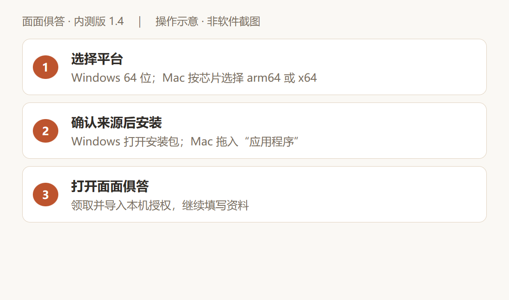
Windows 未签名安装包可能触发系统提示；先确认官网来源，不确定时停止并联系维护者。
01a 安装时选择路径
Windows 安装向导支持选择安装文件夹，按提示为当前用户安装。新安装的数据默认保存在安装目录下的“数据”文件夹；已有用户升级后继续使用原来的 AppData 数据位置。
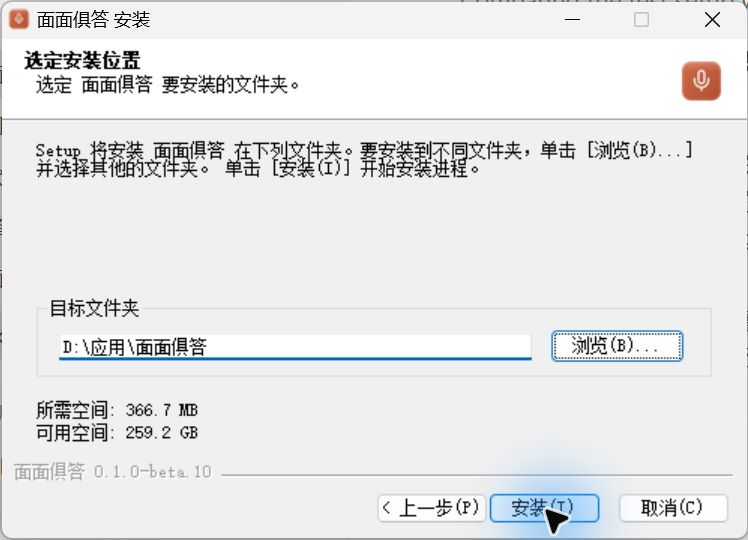
升级会保留数据。卸载时“同时删除我的数据（安装目录内）”默认不勾选，保持不勾即可保留安装目录内的数据；勾选后会删除安装目录下的“数据”文件夹。迁移到其他位置或旧 AppData 中的数据保留，删除前请自行备份。
02 领取并导入本机授权
首次打开，复制授权页的设备码，按官网“获取授权”联系维护者。收到本机
.jyflicense
文件后，阅读并勾选条款，点击“同意条款并启用”，选择授权文件；成功后进入主界面。
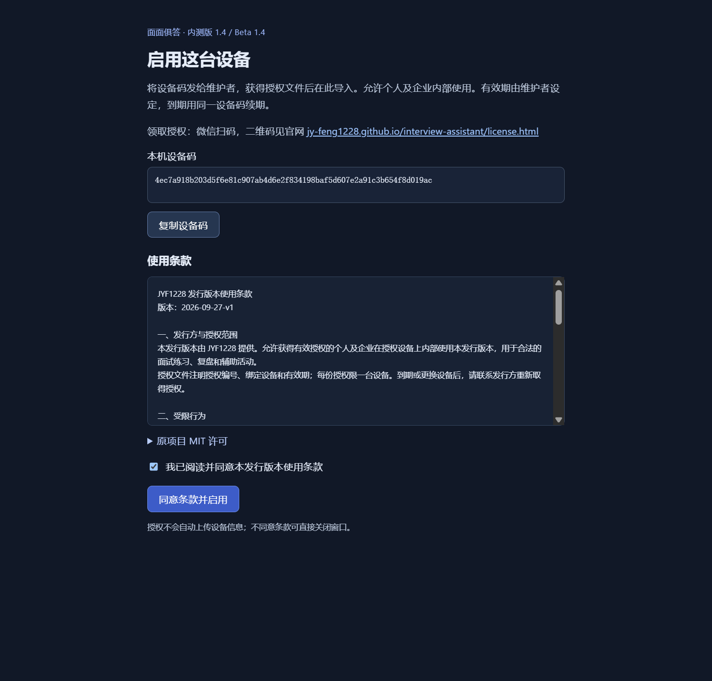
授权不需要联网激活。内测授权通常每次 7 天，到期用同一设备码续期；不要共享授权文件。
03 路径 A：使用已有体验额度
导入含体验额度的本机授权后，点右上角齿轮打开“设置 → 回答”，OpenAI Key 留空即可使用授权中的额度；不必先开户充值，可直接继续第 06 步。不确定授权是否含额度时联系维护者确认。

共享体验额度可能暂停，也可自备 Key；使用共享额度时，相关内容经维护者的 OpenAI 账户发送给 OpenAI。
04 路径 B：填写自己的 Key
在“设置 → 回答”填写自己的 OpenAI Key，再点底部“保存”。内测公开版的回答和转写共用这里的 OpenAI Key。保存并重开设置后，可点“检测 Key”检查当前回答服务、模型和 Key 是否可用，有未保存的改动时先保存。
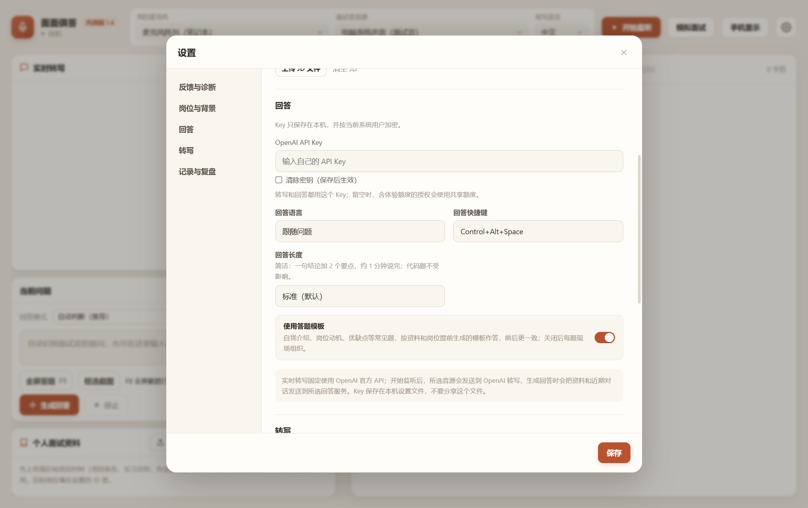
截图不展示 Key，请填写自己的 Key。自己的 OpenAI Key 优先于体验额度；开户步骤见文末官方链接。
05 重开设置，确认已配置
再次打开“设置 → 回答”。输入框清空且提示“已配置”，表示本机保存成功；这不代表网络、余额和模型权限已验证。
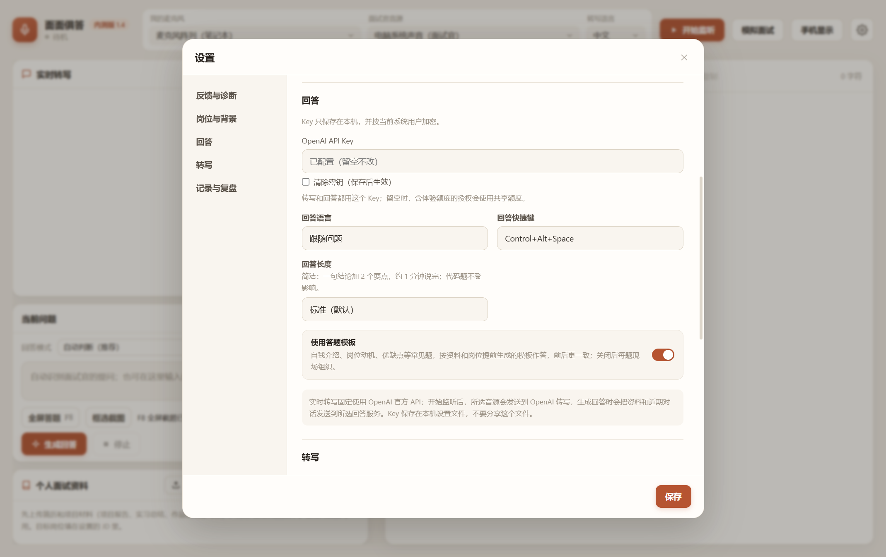
留空保存表示保留旧值；输入新值表示替换；勾选“清除密钥”再保存才会移除。
06 填写并保存岗位 JD
在“岗位与背景”填本场 JD，点“保存”。重新打开确认 JD 仍在；换岗位时替换旧 JD。
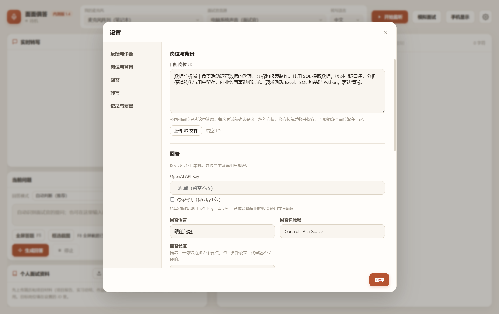
保存 JD 可能触发术语生成、资料预热等服务请求。不要把希望获得的经历写成已发生的事实。
07 找到上传与粘贴入口
主界面“个人面试资料”可点“上传”；要直接添加文本时点“粘贴文本”。先使用不含隐私的简单示例。
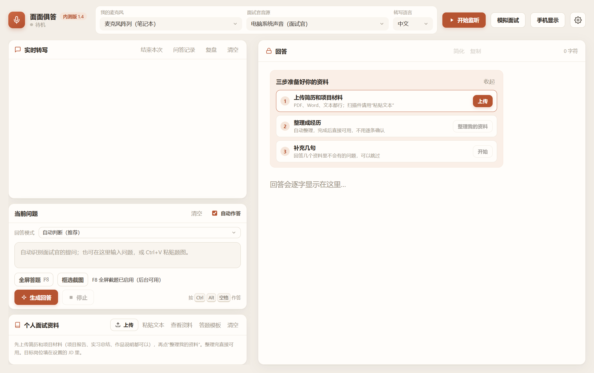
08 填写并添加文本资料
填写名称和正文，再点“Add to 个人面试资料”。添加成功后可点“查看资料”。
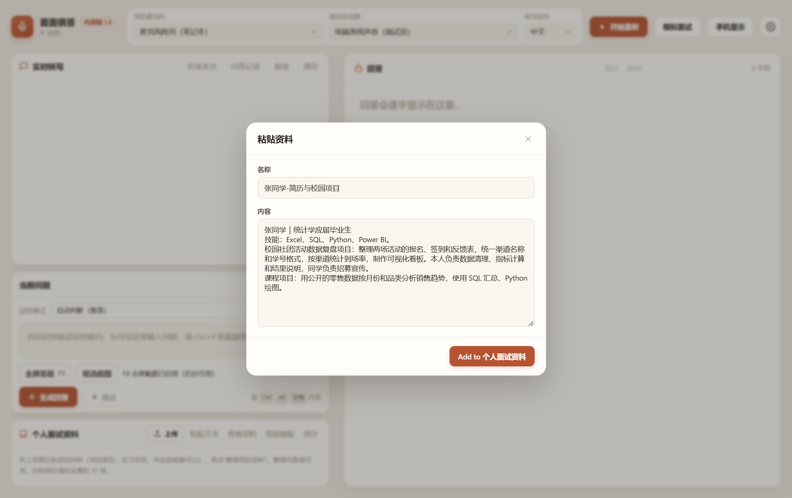
支持可复制文字的 PDF、DOCX、TXT 等；扫描件不会自动 OCR。粘贴前先核对原文，文件解析可能不完整。
09 查看导入状态
点“查看资料”，核对名称、字符数和资料使用方式。列表没有原始正文预览，字符数也不能证明解析完整。
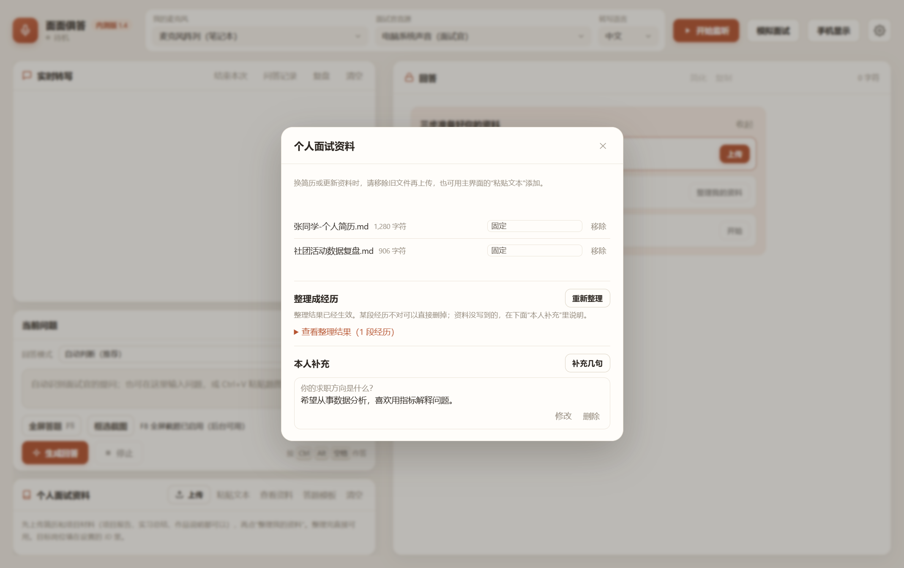
需要经历卡时，继续整理资料；分工不确定时先核对原文。
10 核对资料范围，开始整理
先在“查看资料”核对上传的原件，移除重复或无关资料。点首次引导中的“整理我的资料”，或资料窗口中的同名按钮，整理会直接开始；已有整理结果时按钮为“重新整理”。界面不显示金额。
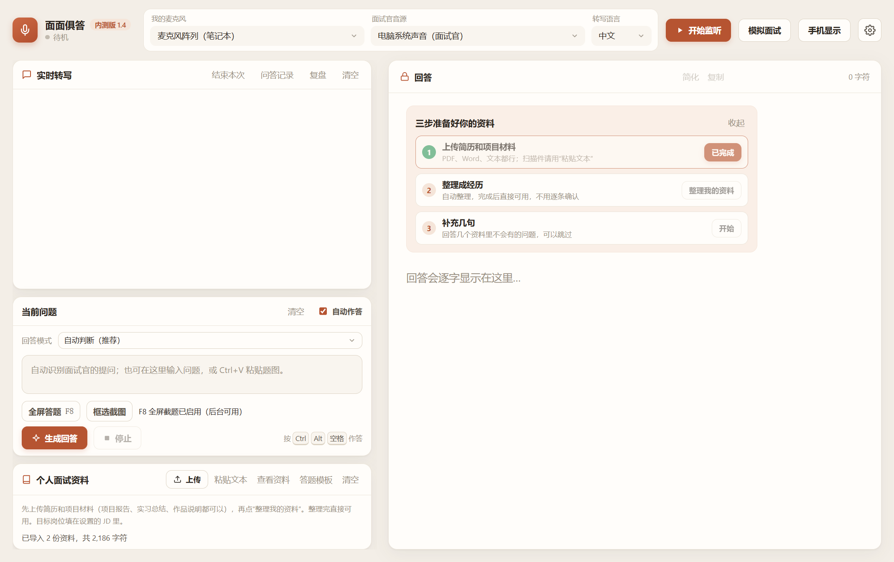
长资料会分段处理；部分失败会显示具体原因和处理建议，并在可恢复时自动拆成更小的段重试。仍未完成时按提示检查网络、服务配置或原文，再手动整理；原资料保留，成功片段可复用。不要连续重复点击。
11 查看整理结果
完成后点“查看资料”，展开“查看整理结果”检查经历卡；原件保留供按题检索。核对本人分工、否定与数字，不把模型补写变成个人事实。
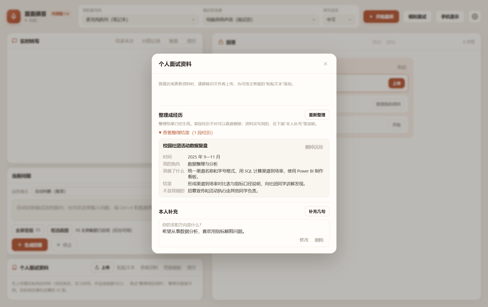
试答会另外产生请求和费用，不需要时可跳过。整理不能补造原文没有的事实。
11a 补充问答：资料说法不一致，请你确认
整理后出现冲突确认题时，逐条看“说法1”“说法2”和各自出处。选择符合实际的一项；两项都不准确时选“都不对，我来写”，填写正确说法，再点“保存”（还有后续题时为“保存，下一题”）。不确定可“跳过这题”或“以后再说”，未解决的冲突不作为已确认事实使用。
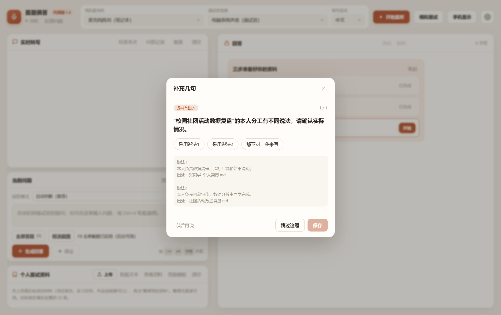
确认内容保存在“本人补充”，上传原文件不变。要修改：打开“查看资料 → 本人补充”，点该条“修改”，写明正确事实并保存；要撤回：点该条“删除”，冲突会恢复为待确认，可再点“补充几句”选择。修改补充不等于修改原件，原件本身有错时也应更正后重新导入整理。
12 输入问题，生成一次参考回答
在“当前问题”输入题目，点“生成回答”；右侧出现正文后，核对引用的经历、分工和数字。第一次手动提问无需开启监听。
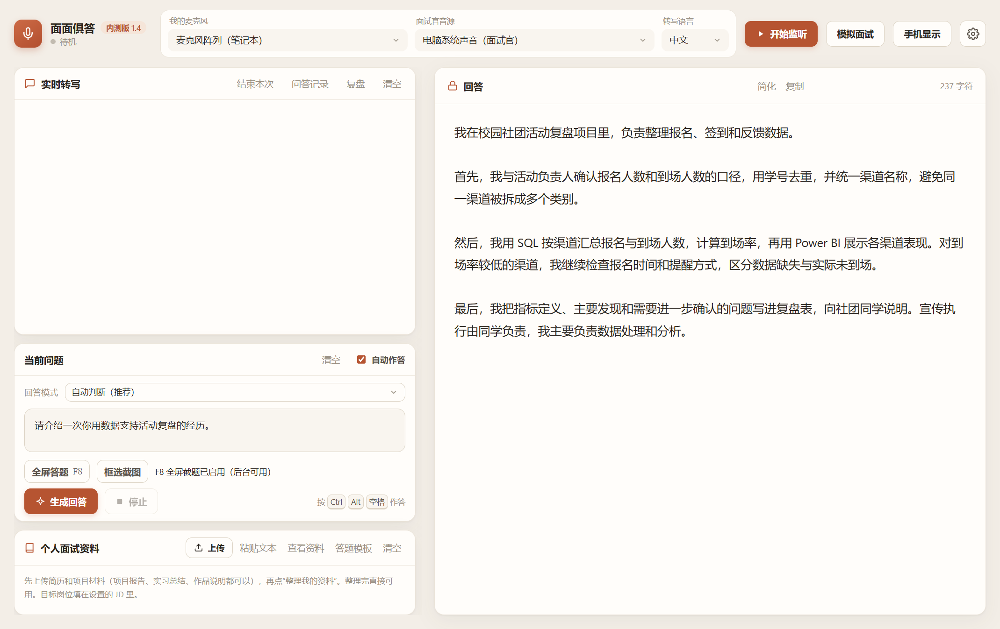
等待过久可点“停止”。失败或重试仍可能计费；核查完成也不代表事实已经人工确认。
按需使用
12a 导入题库并使用原答案
在主界面点“题库”，再点“导入文件…”。支持 TXT、Markdown、DOCX、XLSX、CSV，文件须不超过 20MiB。文本可按“问：… / 答：…”、编号或 Markdown 标题加正文整理；表格须使用“问题、答案”两列，XLSX 中的公式先转为值。题库最多保存 2000 题，总文本不超过 10MiB。
导入后先查看预览，展开题目核对题目和原答案。已有题目及同批重复题会跳过。可在“其他问法（可选）”中每行补一个确实表示同一道题的问法，核对后点“保存”，未保存的导入不会生效。
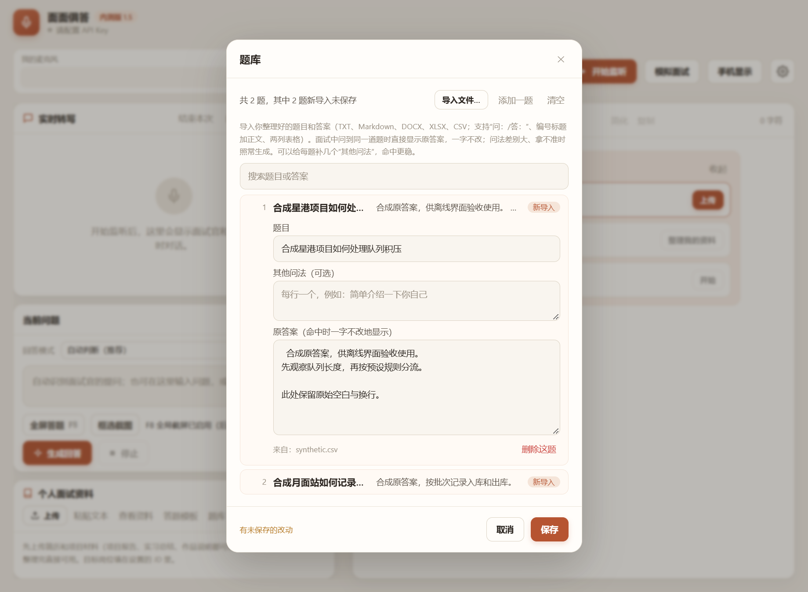
“设置 → 回答”中的题库开关默认开启。命中时回答区显示“题库原答案”和对应原题，正文按保存的原答案显示。相近问法可能只发送问题给模型判定是否同题；差别较大或无法确定时继续正常生成。追问、题图及共用麦克风等情况会跳过题库。
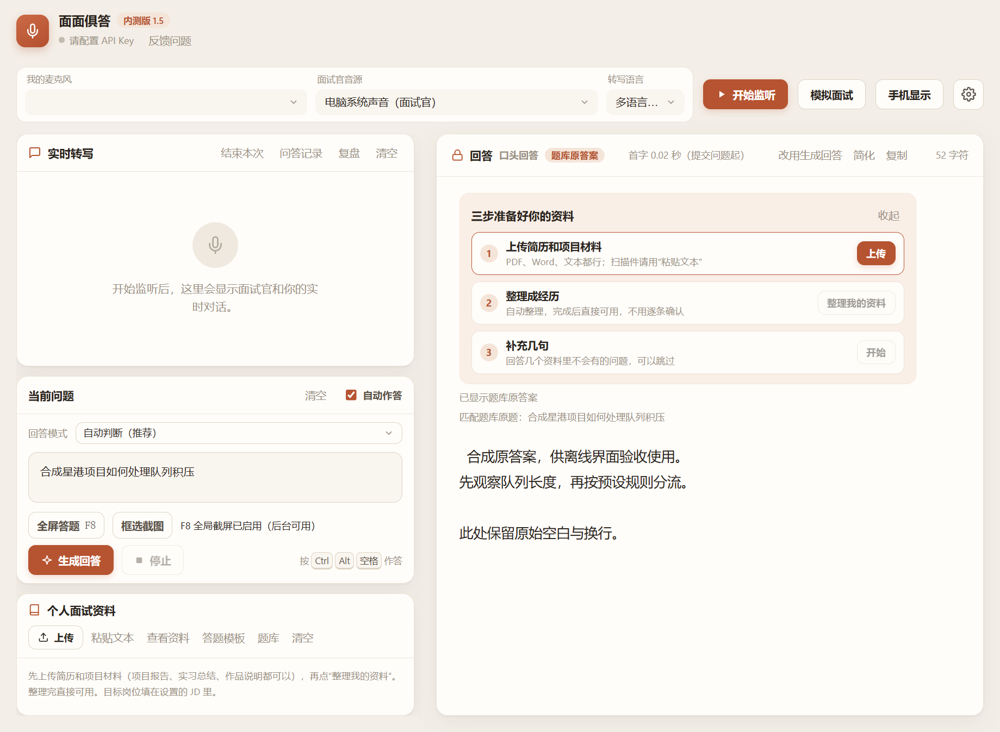
需要重新生成时，点“改用生成回答”，会针对同一问题重新请求回答服务。原答案是否适合当前问题仍需自己核对。
13 选择音源，再开始监听
主界面顶部选择“我的麦克风”和“面试官音源”，确认转写语言，再点“开始监听”。看到转写文字后检查题目是否完整；不需要自动回答时取消“自动作答”。
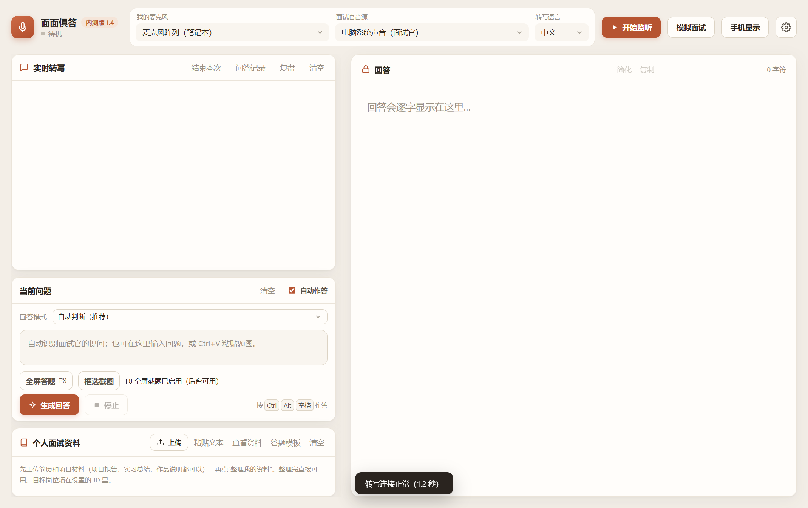
点击“开始监听”后，软件先检查转写连接，再进入音频转写。“转写连接正常”表示连接建立，可继续检查实际转写；不保证后续始终稳定。提示“不稳定”时先检查能否访问 OpenAI 服务、Key 和额度，等待自动重连；持续失败时停止后重新开始。期间可手动输入问题，无需依赖转写。
转写使用 OpenAI，需有效 Key、额度、网络及系统权限；停止监听后不继续主动采集两路音频。
14 模拟面试：选择“我来答”
点“模拟面试”，选择“我来答”，填写本场 JD、侧重和题数。检查朗读和自动下一题选项，再点“开始模拟面试”。
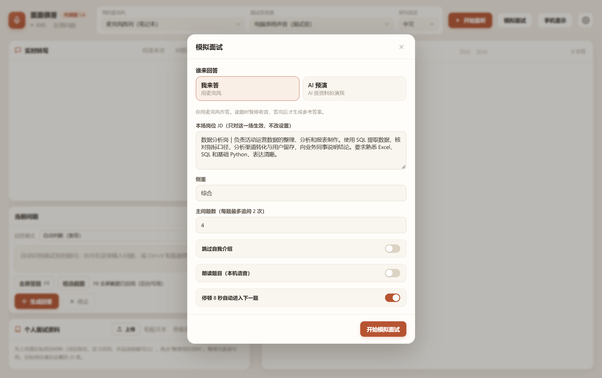
开始后用麦克风作答，可按页面暂停、跳题或结束。思考时间较长时关闭自动下一题；参考答案不能替换你的真实发言。
15 AI 预演：由 AI 按资料代答
在同一入口选择“AI 预演”，设置侧重与题数，再点“开始预演”。此模式不用麦克风，出题、代答、核查和报告均可能收费。
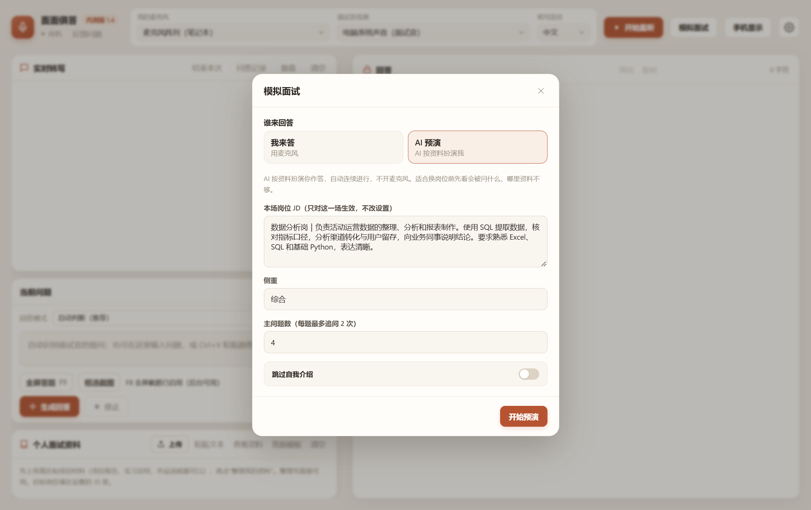
可随时停止；它展示资料可能支持的回答，不代表你本人的表达能力。
16 看题目和进度，结束后复盘
运行时查看当前题目、回答与进度，按页面按钮结束或等待完成。结束后到“复盘”选择对应场次，区分“我来答”与“AI 预演”。
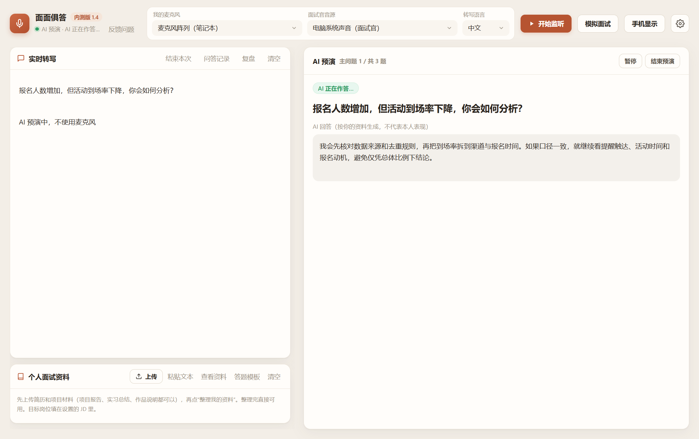
首字时间是等待首段可显示正文的时间，不是完整回答耗时或实际口述时长。
17 先开启问答保存询问
需要保存普通问答时，打开“设置 → 记录与复盘”，开启“结束或退出时是否保存问答”，再点“保存”。公开版默认关闭。
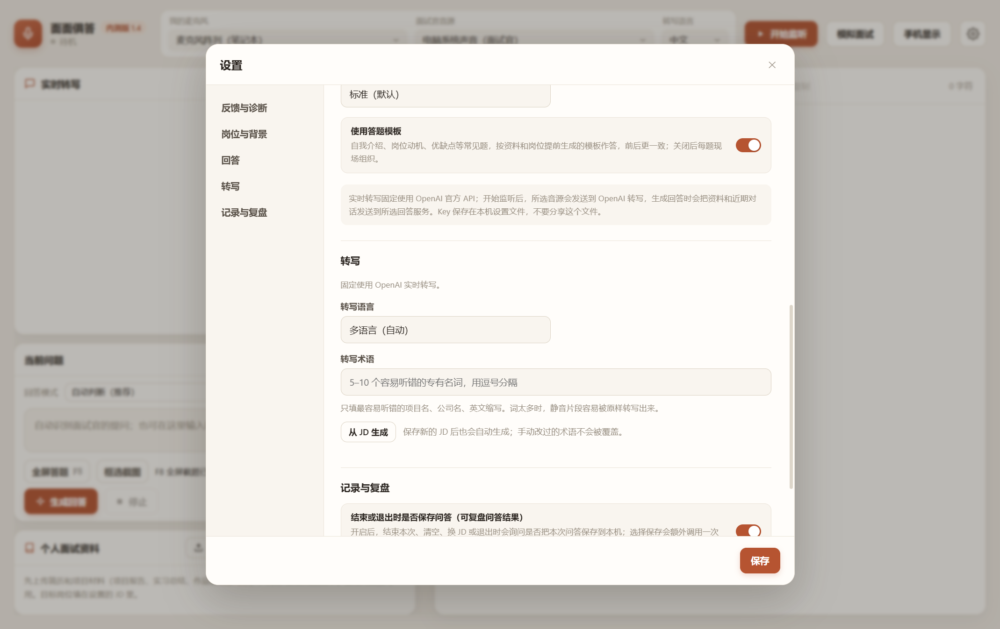
“结束后自动生成复盘”是另一个选项，会新增调用；不需要时保持关闭。
18 结束本次，选择保存
有已完成问答时点主界面“结束本次”，在提示里选“保存问答”。选择返回可继续；保存失败时本次内存问答保留，先处理错误再退出。
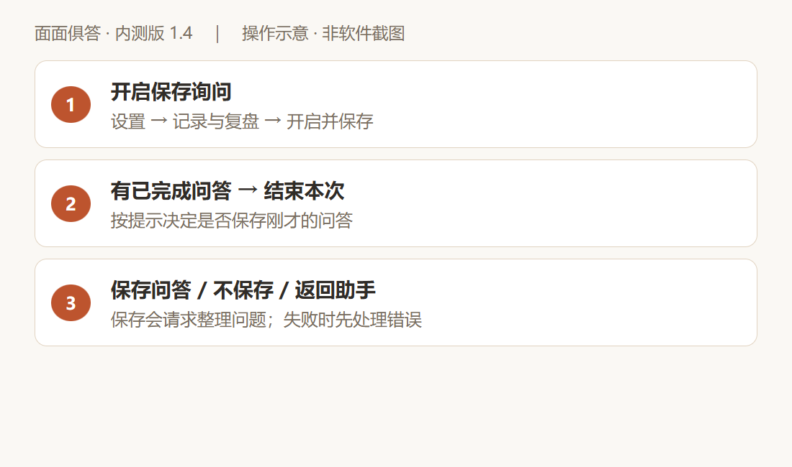
保存会额外调用模型整理问题，可能收费。没有已完成问答时不会出现相同保存选择；没有绕过设置开关的独立手动保存按钮。
19 找到问答记录文件
主界面“实时转写”标题栏点“问答记录”，打开本机记录文件夹。分享文件前检查姓名、联系方式、项目原文及题图等敏感内容。
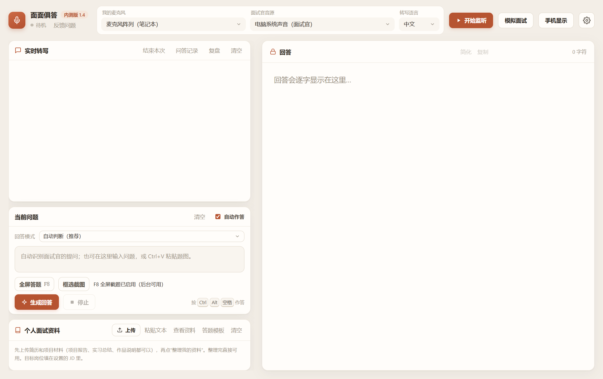
问答、场次归档与原始音频是不同记录；保存问答不代表录音。删除前自行备份需要保留的内容。
19a 查看和更改保存位置
打开“设置 → 记录与复盘 → 保存位置”，可查看数据目录和问答记录目录，点“打开”进入对应文件夹。数据目录包含资料、设置、题库及模板；问答记录目录可以单独更改。个人版的数据目录保持原位置，可更改问答记录目录。
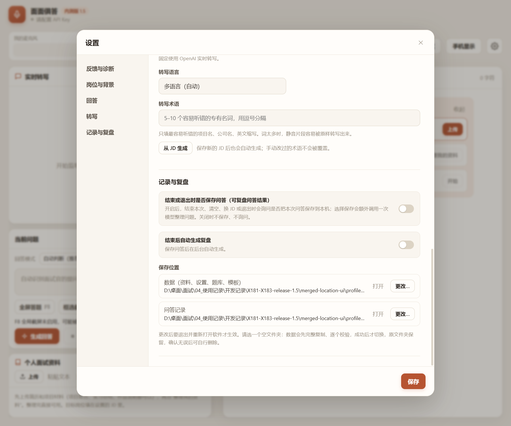
更改数据位置时选择一个空文件夹，真正退出并重新打开软件后，软件复制文件并逐个校验，成功后切换，原文件夹保留；失败时继续使用原目录。确认迁移成功并自行备份后，可自行删除旧文件夹。问答记录目录更改也在退出重开后生效，已有问答仍留在原目录。
20 打开场次复盘
在同一标题栏点“复盘”，选择已保存场次，查看问题、回答和报告。没有场次时按页面提示先结束并保存问答。
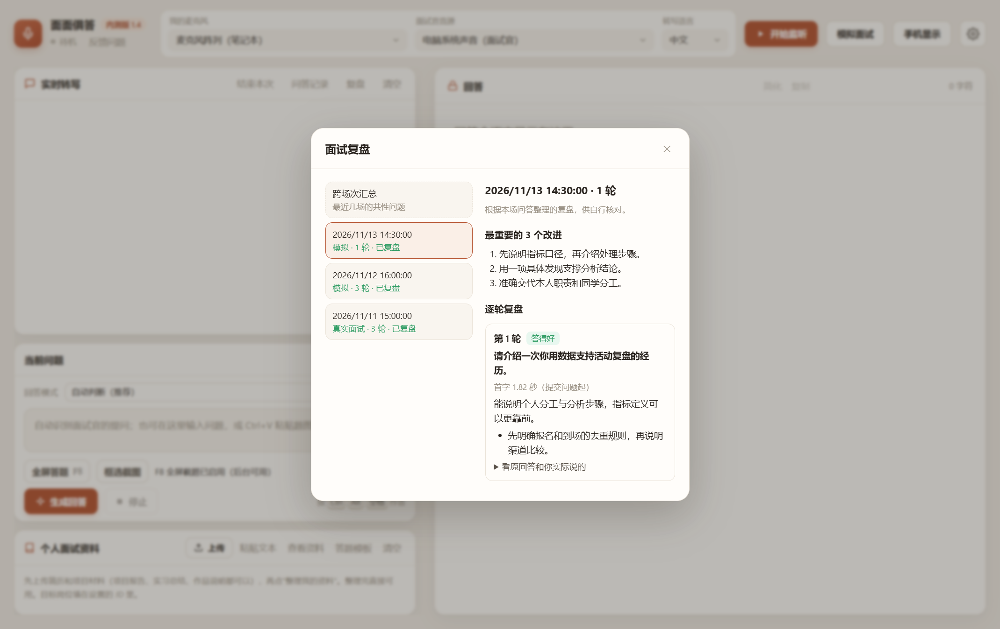
报告是模型建议；本人转写、AI 代答和参考答案要分开看。生成或重新生成报告可能收费。
21 截图题：只选需要的题干
“当前问题”下方可点“框选截图”，或在问题框粘贴已裁好的题图。F8 / “全屏答题”会截鼠标所在的整块屏幕，先移走其他敏感窗口。
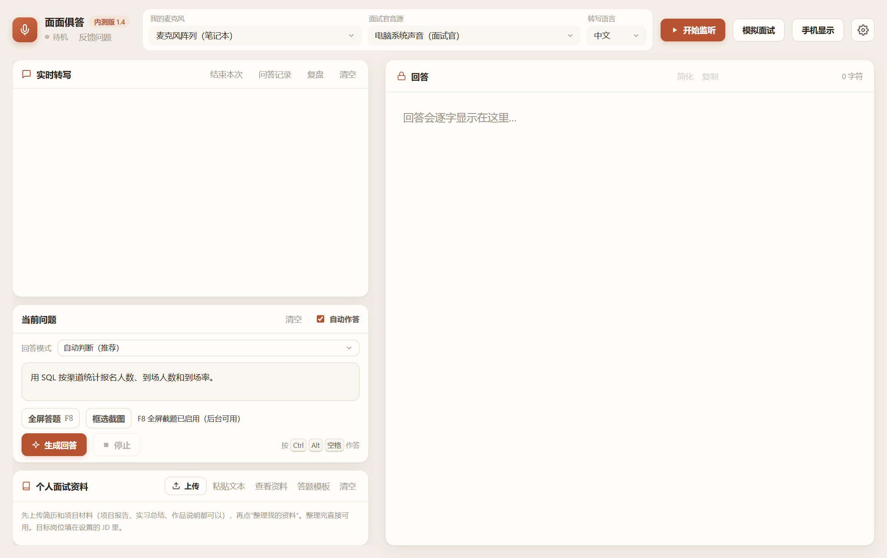
截图会发送给支持图片的回答模型，不会自动滚动补题。快捷键冲突时用界面按钮。
22 手机只读显示
手机和电脑先连接同一个 Wi-Fi。点“手机显示”，优先选 WLAN 对应的 IPv4 地址，再点“开启手机显示”并扫码；换网络后重新开启、扫码。
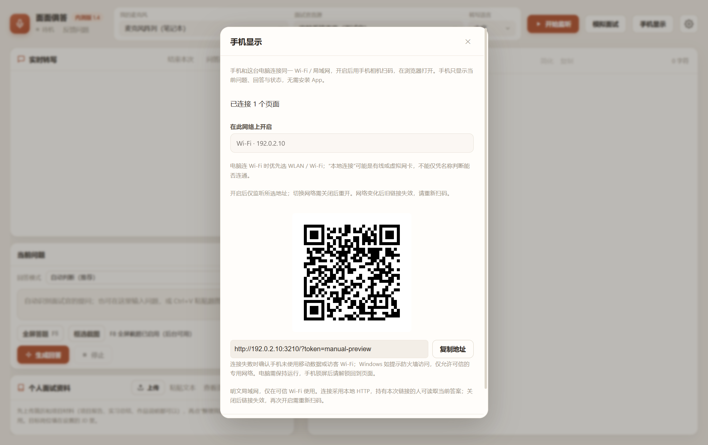
只在可信 Wi-Fi 使用：明文局域网传输，持有二维码或链接的人可读当前问答。手机不能配置 Key、管理资料或发起回答。“本地连接”可能是有线或虚拟网卡，不保证手机可达；电脑走网线、手机连同一路由器 Wi-Fi 时也可能可用，仍受隔离与防火墙影响。
23 反馈问题
“设置 → 反馈与诊断”点“反馈问题”，复制内容的第一行会概括最近失败的功能、原因和次数，并显示已有的转写自检结果，下面附诊断信息。把这些内容和出错时间、复现步骤一起发到内测群。授权及入群联系方式见官网“获取授权”。
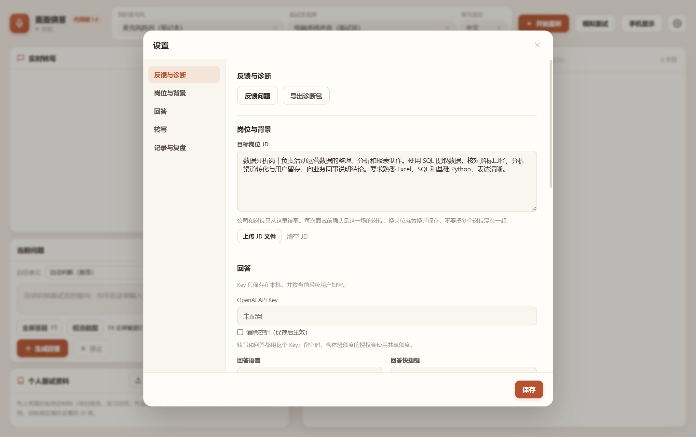
不要发送 Key、授权文件、简历全文或真实面试录音。复制诊断不会自动发送给维护者。
24 确认后导出诊断包
需要更多信息时点“导出诊断包”，先阅读包含内容，再确认并选择本地保存位置。诊断包中包含事件时间线和错误汇总，可定位功能、原因类别、HTTP 状态、服务商代号、模型、耗时与重试序号。最近约 500 条安全事件会在本机滚动保留，重启应用后仍可导出。导出后自行核对，再决定是否分享。
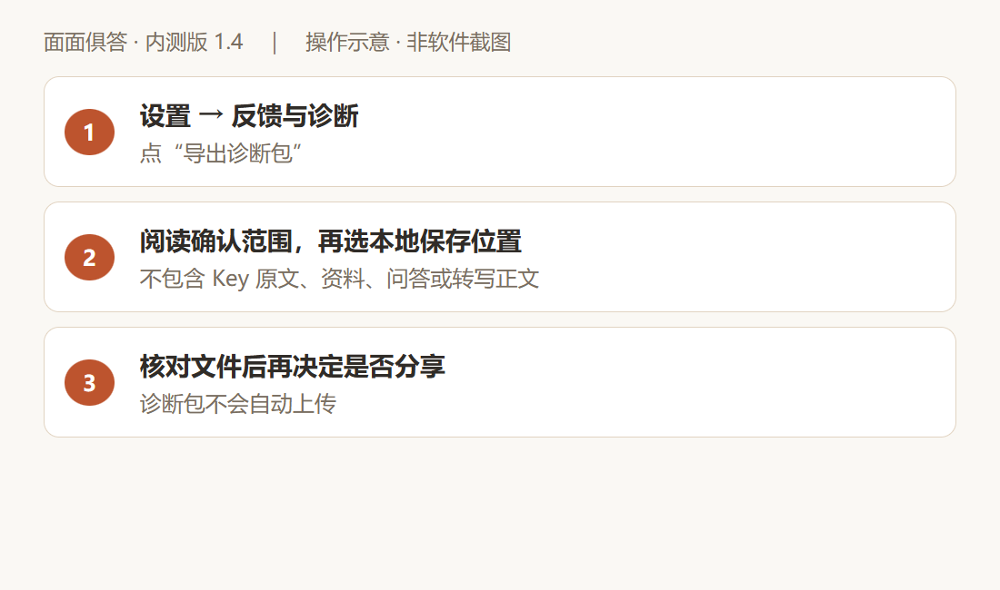
诊断包不自动上传；Key 只标已配置/未配置，不包含资料、问答、转写或设备码。
25 隐藏或真正退出
点窗口关闭按钮。选择“隐藏到托盘并继续运行”会留在后台；选择“退出程序”才真正结束。取消退出后，需要时手动重新监听。
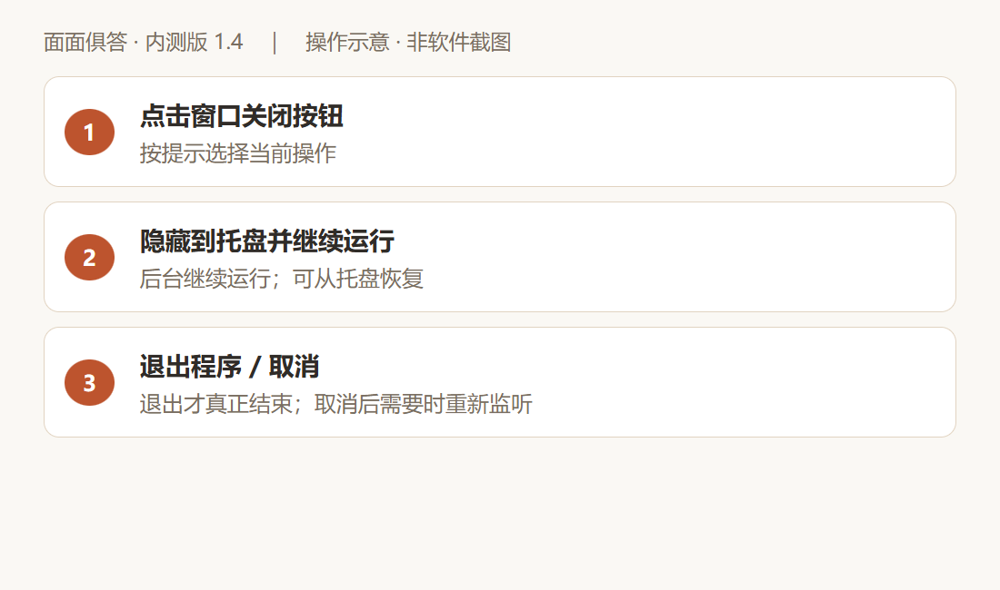
隐藏后可从系统托盘图标恢复。更新代码或安装版本后需真正退出再打开，仅隐藏不会加载更新。
怎么获取 OpenAI API Key
已有体验额度可跳过开户。自备 Key 时，按 官方入门说明 在本人有权使用的账户/项目创建 Key，粘贴到软件“设置 → 回答”，不要发群或截图分享。
API 计费独立于 ChatGPT 订阅。开户、支付及自动充值由你本人确认；不需要为了体验额度先开户。
自备 Key 的消费与限额请在服务商账户中核对，软件内不显示金额。
费用、隐私与使用限制
- 费用：回答、核查、预热、整理、试答、转写、模拟、预演和复盘都可能收费。先确认模型和操作范围；界面不显示金额，超时或停止不证明未计费，账单以服务商为准。
- 地区：OpenAI API 支持资格以 官方地区清单 为准，网络连通不代表使用资格。可选择其他回答服务，实时转写仍使用 OpenAI。
- 发送内容：相关问题、JD、背景、资料片段/整理原文、题图及相应场次内容会发到所选回答服务；监听音频发到 OpenAI。Ollama 只有配置在本机时回答链路才在本机，其他云功能不会随之本地化。
- 本机数据：设置、资料及记录留在本机，资料和问答本身不加密；系统支持时 Key 按当前用户加密；加密不可用时可能明文保存，按软件提示处理。授权失效或卸载不等于删除记录，也无法撤回已发给服务商的内容。
- 资料依据：只导入真实、有权发送的材料。分工、否定和数字要核对；资料缺失时不能由模型常识补成个人经历。仅简历支持、冲突或未知项按界面提示处理；整理部分失败会提示原因和建议，并在可恢复时拆小重试。
- 常见错误：上传读不到文字时改用可复制文本；Key/额度错误先检查对应服务或联系维护者；超时先看网络与模型权限。避免连续重复付费操作，反馈只分享脱敏信息。
授权说明
Mac 版还在开发中，没有进入内测，暂不提供下载；开放后会在官网和内测群通知。
授权使用当前电脑显示的设备码，换电脑需要重新领取。麦克风、屏幕及电脑声音权限按系统提示由本人确认；修改后退出重开。
软件会读取官网的签名停用和版本信息；联网失败不新增停用，也不自动下载安装。有效停用通知或最低版本要求会限制新回答，已有记录可按流程处理。换设备或授权到期请联系维护者，不要删除资料尝试修复。
本发行版由 JY-Feng1228 维护，基于 MIT 许可的 ericwang915/interview-copilot 修改；随包许可和授权条款为准。